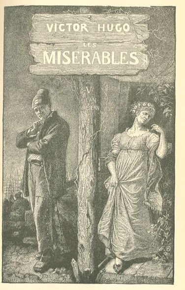

Les Misérables
CHAPTER III—WHILE COSETTE AND TOUSSAINT ARE ASLEEP
Jean Valjean went into the house with Marius' letter.
He groped his way up the stairs, as pleased with the darkness as an owl who grips
his prey, opened and shut his door softly, listened to see whether he could hear any
noise,—made sure that, to all appearances, Cosette and Toussaint were asleep, and
plunged three or four matches into the bottle of the Fumade lighter before he could
evoke a spark, so greatly did his hand tremble. What he had just done smacked of theft.
At last the candle was lighted; he leaned his elbows on the table, unfolded the paper,
and read.
In violent emotions, one does not read, one flings to the earth, so to speak, the
paper which one holds, one clutches it like a victim, one crushes it, one digs into
it the nails of one's wrath, or of one's joy; one hastens to the end, one leaps to
the beginning; attention is at fever heat; it takes up in the gross, as it were, the
essential points; it seizes on one point, and the rest disappears. In Marius' note
to Cosette, Jean Valjean saw only these words:—
"I die. When thou readest this, my soul will be near thee."
In the presence of these two lines, he was horribly dazzled; he remained for a moment,
crushed, as it were, by the change of emotion which was taking place within him, he
stared at Marius' note with a sort of intoxicated amazement, he had before his eyes
that splendor, the death of a hated individual.
He uttered a frightful cry of inward joy. So it was all over. The catastrophe had
arrived sooner than he had dared to hope. The being who obstructed his destiny was
disappearing. That man had taken himself off of his own accord, freely, willingly.
This man was going to his death, and he, Jean Valjean, had had no hand in the matter,
and it was through no fault of his. Perhaps, even, he is already dead. Here his fever
entered into calculations. No, he is not dead yet. The letter had evidently been intended
for Cosette to read on the following morning; after the two discharges that were heard
between eleven o'clock and midnight, nothing more has taken place; the barricade will
not be attacked seriously until daybreak; but that makes no difference, from the moment
when "that man" is concerned in this war, he is lost; he is caught in the gearing.
Jean Valjean felt himself delivered. So he was about to find himself alone with Cosette
once more. The rivalry would cease; the future was beginning again. He had but to
keep this note in his pocket. Cosette would never know what had become of that man.
All that there requires to be done is to let things take their own course. This man
cannot escape. If he is not already dead, it is certain that he is about to die. What
good fortune!
Having said all this to himself, he became gloomy.
Then he went down stairs and woke up the porter.
About an hour later, Jean Valjean went out in the complete costume of a National Guard,
and with his arms. The porter had easily found in the neighborhood the wherewithal
to complete his equipment. He had a loaded gun and a cartridge-box filled with cartridges.
He strode off in the direction of the markets.
CHAPTER IV—GAVROCHE'S EXCESS OF ZEAL
In the meantime, Gavroche had had an adventure.
Gavroche, after having conscientiously stoned the lantern in the Rue du Chaume, entered
the Rue des Vielles-Haudriettes, and not seeing "even a cat" there, he thought the
opportunity a good one to strike up all the song of which he was capable. His march,
far from being retarded by his singing, was accelerated by it. He began to sow along
the sleeping or terrified houses these incendiary couplets:—
"L'oiseau médit dans les charmilles,
Et prétend qu'hier Atala
Avec un Russe s'en alla.
Où vont les belles filles,
Lon la.
"Mon ami Pierrot, tu babilles,
Parce que l'autre jour Mila
Cogna sa vitre et m'appela,
Où vont les belles filles,
Lon la.
"Les drôlesses sont fort gentilles,
Leur poison qui m'ensorcela
Griserait Monsieur Orfila.
Où vont les belles filles,
Lon la.
"J'aime l'amour et les bisbilles,
J'aime Agnès, j'aime Pamela,
Lise en m'allumant se brûla.
Où vont les belles filles,
Lon la.
"Jadis, quand je vis les mantilles
De Suzette et de Zeila,
Mon âme à leurs plis se mêla,
Où vont les belles filles,
Lon la.
"Amour, quand dans l'ombre où tu brilles,
Tu coiffes de roses Lola,
Je me damnerais pour cela.
Où vont les belles filles,
Lon la.
"Jeanne à ton miroir tu t'habilles!
Mon cœur un beau jour s'envola.
Je crois que c'est Jeanne qui l'a.
Où vont les belles filles,
Lon la.
"Le soir, en sortant des quadrilles,
Je montre aux étoiles Stella,
Et je leur dis: 'Regardez-la.'
Où vont les belles filles,
Lon la."56
Et prétend qu'hier Atala
Avec un Russe s'en alla.
Où vont les belles filles,
Lon la.
"Mon ami Pierrot, tu babilles,
Parce que l'autre jour Mila
Cogna sa vitre et m'appela,
Où vont les belles filles,
Lon la.
"Les drôlesses sont fort gentilles,
Leur poison qui m'ensorcela
Griserait Monsieur Orfila.
Où vont les belles filles,
Lon la.
"J'aime l'amour et les bisbilles,
J'aime Agnès, j'aime Pamela,
Lise en m'allumant se brûla.
Où vont les belles filles,
Lon la.
"Jadis, quand je vis les mantilles
De Suzette et de Zeila,
Mon âme à leurs plis se mêla,
Où vont les belles filles,
Lon la.
"Amour, quand dans l'ombre où tu brilles,
Tu coiffes de roses Lola,
Je me damnerais pour cela.
Où vont les belles filles,
Lon la.
"Jeanne à ton miroir tu t'habilles!
Mon cœur un beau jour s'envola.
Je crois que c'est Jeanne qui l'a.
Où vont les belles filles,
Lon la.
"Le soir, en sortant des quadrilles,
Je montre aux étoiles Stella,
Et je leur dis: 'Regardez-la.'
Où vont les belles filles,
Lon la."56
Gavroche, as he sang, was lavish of his pantomime. Gesture is the strong point of
the refrain. His face, an inexhaustible repertory of masks, produced grimaces more
convulsing and more fantastic than the rents of a cloth torn in a high gale. Unfortunately,
as he was alone, and as it was night, this was neither seen nor even visible. Such
wastes of riches do occur.
All at once, he stopped short.
"Let us interrupt the romance," said he.
His feline eye had just descried, in the recess of a carriage door, what is called
in painting, an ensemble, that is to say, a person and a thing; the thing was a hand-cart,
the person was a man from Auvergene who was sleeping therein.
The shafts of the cart rested on the pavement, and the Auvergnat's head was supported
against the front of the cart. His body was coiled up on this inclined plane and his
feet touched the ground.
Gavroche, with his experience of the things of this world, recognized a drunken man.
He was some corner errand-man who had drunk too much and was sleeping too much.
"There now," thought Gavroche, "that's what the summer nights are good for. We'll
take the cart for the Republic, and leave the Auvergnat for the Monarchy."
His mind had just been illuminated by this flash of light:—
"How bully that cart would look on our barricade!"
The Auvergnat was snoring.
Gavroche gently tugged at the cart from behind, and at the Auvergnat from the front,
that is to say, by the feet, and at the expiration of another minute the imperturbable
Auvergnat was reposing flat on the pavement.
The cart was free.
Gavroche, habituated to facing the unexpected in all quarters, had everything about
him. He fumbled in one of his pockets, and pulled from it a scrap of paper and a bit
of red pencil filched from some carpenter.
He wrote:—
"French Republic."
"Received thy cart."
And he signed it: "GAVROCHE."
"Received thy cart."
And he signed it: "GAVROCHE."
That done, he put the paper in the pocket of the still snoring Auvergnat's velvet
vest, seized the cart shafts in both hands, and set off in the direction of the Halles,
pushing the cart before him at a hard gallop with a glorious and triumphant uproar.
This was perilous. There was a post at the Royal Printing Establishment. Gavroche
did not think of this. This post was occupied by the National Guards of the suburbs.
The squad began to wake up, and heads were raised from camp beds. Two street lanterns
broken in succession, that ditty sung at the top of the lungs. This was a great deal
for those cowardly streets, which desire to go to sleep at sunset, and which put the
extinguisher on their candles at such an early hour. For the last hour, that boy had
been creating an uproar in that peaceable arrondissement, the uproar of a fly in a
bottle. The sergeant of the banlieue lent an ear. He waited. He was a prudent man.
The mad rattle of the cart, filled to overflowing the possible measure of waiting,
and decided the sergeant to make a reconnaisance.
"There's a whole band of them there!" said he, "let us proceed gently."
It was clear that the hydra of anarchy had emerged from its box and that it was stalking
abroad through the quarter.
And the sergeant ventured out of the post with cautious tread.
All at once, Gavroche, pushing his cart in front of him, and at the very moment when
he was about to turn into the Rue des Vielles-Haudriettes, found himself face to face
with a uniform, a shako, a plume, and a gun.
For the second time, he stopped short.
"Hullo," said he, "it's him. Good day, public order."
Gavroche's amazement was always brief and speedily thawed.
"Where are you going, you rascal?" shouted the sergeant.
"Citizen," retorted Gavroche, "I haven't called you 'bourgeois' yet. Why do you insult
me?"
"Where are you going, you rogue?"
"Monsieur," retorted Gavroche, "perhaps you were a man of wit yesterday, but you have
degenerated this morning."
"I ask you where are you going, you villain?"
Gavroche replied:—
"You speak prettily. Really, no one would suppose you as old as you are. You ought
to sell all your hair at a hundred francs apiece. That would yield you five hundred
francs."
"Where are you going? Where are you going? Where are you going, bandit?"
Gavroche retorted again:—
"What villainous words! You must wipe your mouth better the first time that they give
you suck."
The sergeant lowered his bayonet.
"Will you tell me where you are going, you wretch?"
"General," said Gavroche "I'm on my way to look for a doctor for my wife who is in
labor."
"To arms!" shouted the sergeant.
The master-stroke of strong men consists in saving themselves by the very means that
have ruined them; Gavroche took in the whole situation at a glance. It was the cart
which had told against him, it was the cart's place to protect him.
At the moment when the sergeant was on the point of making his descent on Gavroche,
the cart, converted into a projectile and launched with all the latter's might, rolled
down upon him furiously, and the sergeant, struck full in the stomach, tumbled over
backwards into the gutter while his gun went off in the air.
The men of the post had rushed out pell-mell at the sergeant's shout; the shot brought
on a general random discharge, after which they reloaded their weapons and began again.
This blind-man's-buff musketry lasted for a quarter of an hour and killed several
panes of glass.
In the meanwhile, Gavroche, who had retraced his steps at full speed, halted five
or six streets distant and seated himself, panting, on the stone post which forms
the corner of the Enfants-Rouges.
He listened.
After panting for a few minutes, he turned in the direction where the fusillade was
raging, lifted his left hand to a level with his nose and thrust it forward three
times, as he slapped the back of his head with his right hand; an imperious gesture
in which Parisian street-urchindom has condensed French irony, and which is evidently
efficacious, since it has already lasted half a century.
This gayety was troubled by one bitter reflection.
"Yes," said he, "I'm splitting with laughter, I'm twisting with delight, I abound
in joy, but I'm losing my way, I shall have to take a roundabout way. If I only reach
the barricade in season!"
Thereupon he set out again on a run.
And as he ran:—
"Ah, by the way, where was I?" said he.
And he resumed his ditty, as he plunged rapidly through the streets, and this is what
died away in the gloom:—
"Mais il reste encore des bastilles,
Et je vais mettre le hola
Dans l'ordre public que voilà.
Où vont les belles filles,
Lon la.
"Quelqu'un veut-il jouer aux quilles?
Tout l'ancien monde s'écroula
Quand la grosse boule roula.
Où vont les belles filles,
Lon la.
"Vieux bon peuple, à coups de béquilles,
Cassons ce Louvre où s'étala
La monarchie en falbala.
Où vont les belles filles,
Lon la.
"Nous en avons forcé les grilles,
Le roi Charles-Dix ce jour-là,
Tenait mal et se décolla.
Où vont les belles filles,
Lon la."57
Et je vais mettre le hola
Dans l'ordre public que voilà.
Où vont les belles filles,
Lon la.
"Quelqu'un veut-il jouer aux quilles?
Tout l'ancien monde s'écroula
Quand la grosse boule roula.
Où vont les belles filles,
Lon la.
"Vieux bon peuple, à coups de béquilles,
Cassons ce Louvre où s'étala
La monarchie en falbala.
Où vont les belles filles,
Lon la.
"Nous en avons forcé les grilles,
Le roi Charles-Dix ce jour-là,
Tenait mal et se décolla.
Où vont les belles filles,
Lon la."57
The post's recourse to arms was not without result. The cart was conquered, the drunken
man was taken prisoner. The first was put in the pound, the second was later on somewhat
harassed before the councils of war as an accomplice. The public ministry of the day
proved its indefatigable zeal in the defence of society, in this instance.
Gavroche's adventure, which has lingered as a tradition in the quarters of the Temple,
is one of the most terrible souvenirs of the elderly bourgeois of the Marais, and
is entitled in their memories: "The nocturnal attack by the post of the Royal Printing
Establishment."
VOLUME V—JEAN VALJEAN

BOOK FIRST.—THE WAR BETWEEN FOUR WALLS
CHAPTER I—THE CHARYBDIS OF THE FAUBOURG SAINT ANTOINE AND THE SCYLLA OF THE FAUBOURG DU TEMPLE
The two most memorable barricades which the observer of social maladies can name do
not belong to the period in which the action of this work is laid. These two barricades,
both of them symbols, under two different aspects, of a redoubtable situation, sprang
from the earth at the time of the fatal insurrection of June, 1848, the greatest war
of the streets that history has ever beheld.
It sometimes happens that, even contrary to principles, even contrary to liberty,
equality, and fraternity, even contrary to the universal vote, even contrary to the
government, by all for all, from the depths of its anguish, of its discouragements
and its destitutions, of its fevers, of its distresses, of its miasmas, of its ignorances,
of its darkness, that great and despairing body, the rabble, protests against, and
that the populace wages battle against, the people.
Beggars attack the common right; the ochlocracy rises against demos.
These are melancholy days; for there is always a certain amount of night even in this
madness, there is suicide in this duel, and those words which are intended to be insults—beggars,
canaille, ochlocracy, populace—exhibit, alas! rather the fault of those who reign
than the fault of those who suffer; rather the fault of the privileged than the fault
of the disinherited.
For our own part, we never pronounce those words without pain and without respect,
for when philosophy fathoms the facts to which they correspond, it often finds many
a grandeur beside these miseries. Athens was an ochlocracy; the beggars were the making
of Holland; the populace saved Rome more than once; and the rabble followed Jesus
Christ.
There is no thinker who has not at times contemplated the magnificences of the lower
classes.
It was of this rabble that Saint Jerome was thinking, no doubt, and of all these poor
people and all these vagabonds and all these miserable people whence sprang the apostles
and the martyrs, when he uttered this mysterious saying: "Fex urbis, lex orbis,"—the
dregs of the city, the law of the earth.
The exasperations of this crowd which suffers and bleeds, its violences contrary to
all sense, directed against the principles which are its life, its masterful deeds
against the right, are its popular coups d'etat and should be repressed. The man of
probity sacrifices himself, and out of his very love for this crowd, he combats it.
But how excusable he feels it even while holding out against it! How he venerates
it even while resisting it! This is one of those rare moments when, while doing that
which it is one's duty to do, one feels something which disconcerts one, and which
would dissuade one from proceeding further; one persists, it is necessary, but conscience,
though satisfied, is sad, and the accomplishment of duty is complicated with a pain
at the heart.
June, 1848, let us hasten to say, was an exceptional fact, and almost impossible of
classification, in the philosophy of history. All the words which we have just uttered,
must be discarded, when it becomes a question of this extraordinary revolt, in which
one feels the holy anxiety of toil claiming its rights. It was necessary to combat
it, and this was a duty, for it attacked the republic. But what was June, 1848, at
bottom? A revolt of the people against itself.
Where the subject is not lost sight of, there is no digression; may we, then, be permitted
to arrest the reader's attention for a moment on the two absolutely unique barricades
of which we have just spoken and which characterized this insurrection.
One blocked the entrance to the Faubourg Saint Antoine; the other defended the approach
to the Faubourg du Temple; those before whom these two fearful masterpieces of civil
war reared themselves beneath the brilliant blue sky of June, will never forget them.
The Saint-Antoine barricade was tremendous; it was three stories high, and seven hundred
feet wide. It barred the vast opening of the faubourg, that is to say, three streets,
from angle to angle; ravined, jagged, cut up, divided, crenelated, with an immense
rent, buttressed with piles that were bastions in themselves throwing out capes here
and there, powerfully backed up by two great promontories of houses of the faubourg,
it reared itself like a cyclopean dike at the end of the formidable place which had
seen the 14th of July. Nineteen barricades were ranged, one behind the other, in the
depths of the streets behind this principal barricade. At the very sight of it, one
felt the agonizing suffering in the immense faubourg, which had reached that point
of extremity when a distress may become a catastrophe. Of what was that barricade
made? Of the ruins of three six-story houses demolished expressly, said some. Of the
prodigy of all wraths, said others. It wore the lamentable aspect of all constructions
of hatred, ruin. It might be asked: Who built this? It might also be said: Who destroyed
this? It was the improvisation of the ebullition. Hold! take this door! this grating!
this penthouse! this chimney-piece! this broken brazier! this cracked pot! Give all!
cast away all! Push this roll, dig, dismantle, overturn, ruin everything! It was the
collaboration of the pavement, the block of stone, the beam, the bar of iron, the
rag, the scrap, the broken pane, the unseated chair, the cabbage-stalk, the tatter,
the rag, and the malediction. It was grand and it was petty. It was the abyss parodied
on the public place by hubbub. The mass beside the atom; the strip of ruined wall
and the broken bowl,—threatening fraternization of every sort of rubbish. Sisyphus
had thrown his rock there and Job his potsherd. Terrible, in short. It was the acropolis
of the barefooted. Overturned carts broke the uniformity of the slope; an immense
dray was spread out there crossways, its axle pointing heavenward, and seemed a scar
on that tumultuous facade; an omnibus hoisted gayly, by main force, to the very summit
of the heap, as though the architects of this bit of savagery had wished to add a
touch of the street urchin humor to their terror, presented its horseless, unharnessed
pole to no one knows what horses of the air. This gigantic heap, the alluvium of the
revolt, figured to the mind an Ossa on Pelion of all revolutions; '93 on '89, the
9th of Thermidor on the 10th of August, the 18th of Brumaire on the 11th of January,
Vendemiaire on Prairial, 1848 on 1830. The situation deserved the trouble and this
barricade was worthy to figure on the very spot whence the Bastille had disappeared.
If the ocean made dikes, it is thus that it would build. The fury of the flood was
stamped upon this shapeless mass. What flood? The crowd. One thought one beheld hubbub
petrified. One thought one heard humming above this barricade as though there had
been over their hive, enormous, dark bees of violent progress. Was it a thicket? Was
it a bacchanalia? Was it a fortress? Vertigo seemed to have constructed it with blows
of its wings. There was something of the cess-pool in that redoubt and something Olympian
in that confusion. One there beheld in a pell-mell full of despair, the rafters of
roofs, bits of garret windows with their figured paper, window sashes with their glass
planted there in the ruins awaiting the cannon, wrecks of chimneys, cupboards, tables,
benches, howling topsyturveydom, and those thousand poverty-stricken things, the very
refuse of the mendicant, which contain at the same time fury and nothingness. One
would have said that it was the tatters of a people, rags of wood, of iron, of bronze,
of stone, and that the Faubourg Saint Antoine had thrust it there at its door, with
a colossal flourish of the broom making of its misery its barricade. Blocks resembling
headsman's blocks, dislocated chains, pieces of woodwork with brackets having the
form of gibbets, horizontal wheels projecting from the rubbish, amalgamated with this
edifice of anarchy the sombre figure of the old tortures endured by the people. The
barricade Saint Antoine converted everything into a weapon; everything that civil
war could throw at the head of society proceeded thence; it was not combat, it was
a paroxysm; the carbines which defended this redoubt, among which there were some
blunderbusses, sent bits of earthenware bones, coat-buttons, even the casters from
night-stands, dangerous projectiles on account of the brass. This barricade was furious;
it hurled to the clouds an inexpressible clamor; at certain moments, when provoking
the army, it was covered with throngs and tempest; a tumultuous crowd of flaming heads
crowned it; a swarm filled it; it had a thorny crest of guns, of sabres, of cudgels,
of axes, of pikes and of bayonets; a vast red flag flapped in the wind; shouts of
command, songs of attack, the roll of drums, the sobs of women and bursts of gloomy
laughter from the starving were to be heard there. It was huge and living, and, like
the back of an electric beast, there proceeded from it little flashes of lightning.
The spirit of revolution covered with its cloud this summit where rumbled that voice
of the people which resembles the voice of God; a strange majesty was emitted by this
titanic basket of rubbish. It was a heap of filth and it was Sinai.
As we have said previously, it attacked in the name of the revolution—what? The revolution.
It—that barricade, chance, hazard, disorder, terror, misunderstanding, the unknown—had
facing it the Constituent Assembly, the sovereignty of the people, universal suffrage,
the nation, the republic; and it was the Carmagnole bidding defiance to the Marseillaise.
Immense but heroic defiance, for the old faubourg is a hero.
The faubourg and its redoubt lent each other assistance. The faubourg shouldered the
redoubt, the redoubt took its stand under cover of the faubourg. The vast barricade
spread out like a cliff against which the strategy of the African generals dashed
itself. Its caverns, its excrescences, its warts, its gibbosities, grimaced, so to
speak, and grinned beneath the smoke. The mitraille vanished in shapelessness; the
bombs plunged into it; bullets only succeeded in making holes in it; what was the
use of cannonading chaos? and the regiments, accustomed to the fiercest visions of
war, gazed with uneasy eyes on that species of redoubt, a wild beast in its boar-like
bristling and a mountain by its enormous size.
A quarter of a league away, from the corner of the Rue du Temple which debouches on
the boulevard near the Chateaud'Eau, if one thrust one's head bodily beyond the point
formed by the front of the Dallemagne shop, one perceived in the distance, beyond
the canal, in the street which mounts the slopes of Belleville at the culminating
point of the rise, a strange wall reaching to the second story of the house fronts,
a sort of hyphen between the houses on the right and the houses on the left, as though
the street had folded back on itself its loftiest wall in order to close itself abruptly.
This wall was built of paving-stones. It was straight, correct, cold, perpendicular,
levelled with the square, laid out by rule and line. Cement was lacking, of course,
but, as in the case of certain Roman walls, without interfering with its rigid architecture.
The entablature was mathematically parallel with the base. From distance to distance,
one could distinguish on the gray surface, almost invisible loopholes which resembled
black threads. These loopholes were separated from each other by equal spaces. The
street was deserted as far as the eye could reach. All windows and doors were closed.
In the background rose this barrier, which made a blind thoroughfare of the street,
a motionless and tranquil wall; no one was visible, nothing was audible; not a cry,
not a sound, not a breath. A sepulchre.
The dazzling sun of June inundated this terrible thing with light.
It was the barricade of the Faubourg of the Temple.
As soon as one arrived on the spot, and caught sight of it, it was impossible, even
for the boldest, not to become thoughtful before this mysterious apparition. It was
adjusted, jointed, imbricated, rectilinear, symmetrical and funereal. Science and
gloom met there. One felt that the chief of this barricade was a geometrician or a
spectre. One looked at it and spoke low.
From time to time, if some soldier, an officer or representative of the people, chanced
to traverse the deserted highway, a faint, sharp whistle was heard, and the passer-by
fell dead or wounded, or, if he escaped the bullet, sometimes a biscaien was seen
to ensconce itself in some closed shutter, in the interstice between two blocks of
stone, or in the plaster of a wall. For the men in the barricade had made themselves
two small cannons out of two cast-iron lengths of gas-pipe, plugged up at one end
with tow and fire-clay. There was no waste of useless powder. Nearly every shot told.
There were corpses here and there, and pools of blood on the pavement. I remember
a white butterfly which went and came in the street. Summer does not abdicate.
In the neighborhood, the spaces beneath the portes cocheres were encumbered with wounded.
One felt oneself aimed at by some person whom one did not see, and one understood
that guns were levelled at the whole length of the street.
Massed behind the sort of sloping ridge which the vaulted canal forms at the entrance
to the Faubourg du Temple, the soldiers of the attacking column, gravely and thoughtfully,
watched this dismal redoubt, this immobility, this passivity, whence sprang death.
Some crawled flat on their faces as far as the crest of the curve of the bridge, taking
care that their shakos did not project beyond it.
The valiant Colonel Monteynard admired this barricade with a shudder.—"How that is
built!" he said to a Representative. "Not one paving-stone projects beyond its neighbor.
It is made of porcelain."—At that moment, a bullet broke the cross on his breast,
and he fell.
"The cowards!" people said. "Let them show themselves. Let us see them! They dare
not! They are hiding!"
The barricade of the Faubourg du Temple, defended by eighty men, attacked by ten thousand,
held out for three days. On the fourth, they did as at Zaatcha, as at Constantine,
they pierced the houses, they came over the roofs, the barricade was taken. Not one
of the eighty cowards thought of flight, all were killed there with the exception
of the leader, Barthelemy, of whom we shall speak presently.
The Saint-Antoine barricade was the tumult of thunders; the barricade of the Temple
was silence. The difference between these two redoubts was the difference between
the formidable and the sinister. One seemed a maw; the other a mask.
Admitting that the gigantic and gloomy insurrection of June was composed of a wrath
and of an enigma, one divined in the first barricade the dragon, and behind the second
the sphinx.
These two fortresses had been erected by two men named, the one, Cournet, the other,
Barthelemy. Cournet made the Saint-Antoine barricade; Barthelemy the barricade of
the Temple. Each was the image of the man who had built it.
Cournet was a man of lofty stature; he had broad shoulders, a red face, a crushing
fist, a bold heart, a loyal soul, a sincere and terrible eye. Intrepid, energetic,
irascible, stormy; the most cordial of men, the most formidable of combatants. War,
strife, conflict, were the very air he breathed and put him in a good humor. He had
been an officer in the navy, and, from his gestures and his voice, one divined that
he sprang from the ocean, and that he came from the tempest; he carried the hurricane
on into battle. With the exception of the genius, there was in Cournet something of
Danton, as, with the exception of the divinity, there was in Danton something of Hercules.
Barthelemy, thin, feeble, pale, taciturn, was a sort of tragic street urchin, who,
having had his ears boxed by a policeman, lay in wait for him, and killed him, and
at seventeen was sent to the galleys. He came out and made this barricade.
Later on, fatal circumstance, in London, proscribed by all, Barthelemy slew Cournet.
It was a funereal duel. Some time afterwards, caught in the gearing of one of those
mysterious adventures in which passion plays a part, a catastrophe in which French
justice sees extenuating circumstances, and in which English justice sees only death,
Barthelemy was hanged. The sombre social construction is so made that, thanks to material
destitution, thanks to moral obscurity, that unhappy being who possessed an intelligence,
certainly firm, possibly great, began in France with the galleys, and ended in England
with the gallows. Barthelemy, on occasion, flew but one flag, the black flag.
CHAPTER II—WHAT IS TO BE DONE IN THE ABYSS IF ONE DOES NOT CONVERSE
Sixteen years count in the subterranean education of insurrection, and June, 1848,
knew a great deal more about it than June, 1832. So the barricade of the Rue de la
Chanvrerie was only an outline, and an embryo compared to the two colossal barricades
which we have just sketched; but it was formidable for that epoch.
The insurgents under the eye of Enjolras, for Marius no longer looked after anything,
had made good use of the night. The barricade had been not only repaired, but augmented.
They had raised it two feet. Bars of iron planted in the pavement resembled lances
in rest. All sorts of rubbish brought and added from all directions complicated the
external confusion. The redoubt had been cleverly made over, into a wall on the inside
and a thicket on the outside.
The staircase of paving-stones which permitted one to mount it like the wall of a
citadel had been reconstructed.
The barricade had been put in order, the tap-room disencumbered, the kitchen appropriated
for the ambulance, the dressing of the wounded completed, the powder scattered on
the ground and on the tables had been gathered up, bullets run, cartridges manufactured,
lint scraped, the fallen weapons re-distributed, the interior of the redoubt cleaned,
the rubbish swept up, corpses removed.
They laid the dead in a heap in the Mondetour lane, of which they were still the masters.
The pavement was red for a long time at that spot. Among the dead there were four
National Guardsmen of the suburbs. Enjolras had their uniforms laid aside.
Enjolras had advised two hours of sleep. Advice from Enjolras was a command. Still,
only three or four took advantage of it.
Feuilly employed these two hours in engraving this inscription on the wall which faced
the tavern:—
LONG LIVE THE PEOPLES!
These four words, hollowed out in the rough stone with a nail, could be still read
on the wall in 1848.
The three women had profited by the respite of the night to vanish definitely; which
allowed the insurgents to breathe more freely.
They had found means of taking refuge in some neighboring house.
The greater part of the wounded were able, and wished, to fight still. On a litter
of mattresses and trusses of straw in the kitchen, which had been converted into an
ambulance, there were five men gravely wounded, two of whom were municipal guardsmen.
The municipal guardsmen were attended to first.
In the tap-room there remained only Mabeuf under his black cloth and Javert bound
to his post.
"This is the hall of the dead," said Enjolras.
In the interior of this hall, barely lighted by a candle at one end, the mortuary
table being behind the post like a horizontal bar, a sort of vast, vague cross resulted
from Javert erect and Mabeuf lying prone.
The pole of the omnibus, although snapped off by the fusillade, was still sufficiently
upright to admit of their fastening the flag to it.
Enjolras, who possessed that quality of a leader, of always doing what he said, attached
to this staff the bullet-ridden and bloody coat of the old man's.
No repast had been possible. There was neither bread nor meat. The fifty men in the
barricade had speedily exhausted the scanty provisions of the wine-shop during the
sixteen hours which they had passed there. At a given moment, every barricade inevitably
becomes the raft of la Meduse. They were obliged to resign themselves to hunger. They
had then reached the first hours of that Spartan day of the 6th of June when, in the
barricade Saint-Merry, Jeanne, surrounded by the insurgents who demanded bread, replied
to all combatants crying: "Something to eat!" with: "Why? It is three o'clock; at
four we shall be dead."
As they could no longer eat, Enjolras forbade them to drink. He interdicted wine,
and portioned out the brandy.
They had found in the cellar fifteen full bottles hermetically sealed. Enjolras and
Combeferre examined them. Combeferre when he came up again said:—"It's the old stock
of Father Hucheloup, who began business as a grocer."—"It must be real wine," observed
Bossuet. "It's lucky that Grantaire is asleep. If he were on foot, there would be
a good deal of difficulty in saving those bottles."—Enjolras, in spite of all murmurs,
placed his veto on the fifteen bottles, and, in order that no one might touch them,
he had them placed under the table on which Father Mabeuf was lying.
About two o'clock in the morning, they reckoned up their strength. There were still
thirty-seven of them.
The day began to dawn. The torch, which had been replaced in its cavity in the pavement,
had just been extinguished. The interior of the barricade, that species of tiny courtyard
appropriated from the street, was bathed in shadows, and resembled, athwart the vague,
twilight horror, the deck of a disabled ship. The combatants, as they went and came,
moved about there like black forms. Above that terrible nesting-place of gloom the
stories of the mute houses were lividly outlined; at the very top, the chimneys stood
palely out. The sky was of that charming, undecided hue, which may be white and may
be blue. Birds flew about in it with cries of joy. The lofty house which formed the
back of the barricade, being turned to the East, had upon its roof a rosy reflection.
The morning breeze ruffled the gray hair on the head of the dead man at the third-story
window.
"I am delighted that the torch has been extinguished," said Courfeyrac to Feuilly.
"That torch flickering in the wind annoyed me. It had the appearance of being afraid.
The light of torches resembles the wisdom of cowards; it gives a bad light because
it trembles."
Dawn awakens minds as it does the birds; all began to talk.
Joly, perceiving a cat prowling on a gutter, extracted philosophy from it.
"What is the cat?" he exclaimed. "It is a corrective. The good God, having made the
mouse, said: 'Hullo! I have committed a blunder.' And so he made the cat. The cat
is the erratum of the mouse. The mouse, plus the cat, is the proof of creation revised
and corrected."
Combeferre, surrounded by students and artisans, was speaking of the dead, of Jean
Prouvaire, of Bahorel, of Mabeuf, and even of Cabuc, and of Enjolras' sad severity.
He said:—
"Harmodius and Aristogiton, Brutus, Chereas, Stephanus, Cromwell, Charlotte Corday,
Sand, have all had their moment of agony when it was too late. Our hearts quiver so,
and human life is such a mystery that, even in the case of a civic murder, even in
a murder for liberation, if there be such a thing, the remorse for having struck a
man surpasses the joy of having served the human race."
And, such are the windings of the exchange of speech, that, a moment later, by a transition
brought about through Jean Prouvaire's verses, Combeferre was comparing the translators
of the Georgics, Raux with Cournand, Cournand with Delille, pointing out the passages
translated by Malfilatre, particularly the prodigies of Caesar's death; and at that
word, Caesar, the conversation reverted to Brutus.
"Caesar," said Combeferre, "fell justly. Cicero was severe towards Caesar, and he
was right. That severity is not diatribe. When Zoilus insults Homer, when Maevius
insults Virgil, when Vise insults Moliere, when Pope insults Shakspeare, when Frederic
insults Voltaire, it is an old law of envy and hatred which is being carried out;
genius attracts insult, great men are always more or less barked at. But Zoilus and
Cicero are two different persons. Cicero is an arbiter in thought, just as Brutus
is an arbiter by the sword. For my own part, I blame that last justice, the blade;
but, antiquity admitted it. Caesar, the violator of the Rubicon, conferring, as though
they came from him, the dignities which emanated from the people, not rising at the
entrance of the senate, committed the acts of a king and almost of a tyrant, regia
ac pene tyrannica. He was a great man; so much the worse, or so much the better; the
lesson is but the more exalted. His twenty-three wounds touch me less than the spitting
in the face of Jesus Christ. Caesar is stabbed by the senators; Christ is cuffed by
lackeys. One feels the God through the greater outrage."
Bossuet, who towered above the interlocutors from the summit of a heap of paving-stones,
exclaimed, rifle in hand:—
"Oh Cydathenaeum, Oh Myrrhinus, Oh Probalinthus, Oh graces of the AEantides! Oh! Who
will grant me to pronounce the verses of Homer like a Greek of Laurium or of Edapteon?"